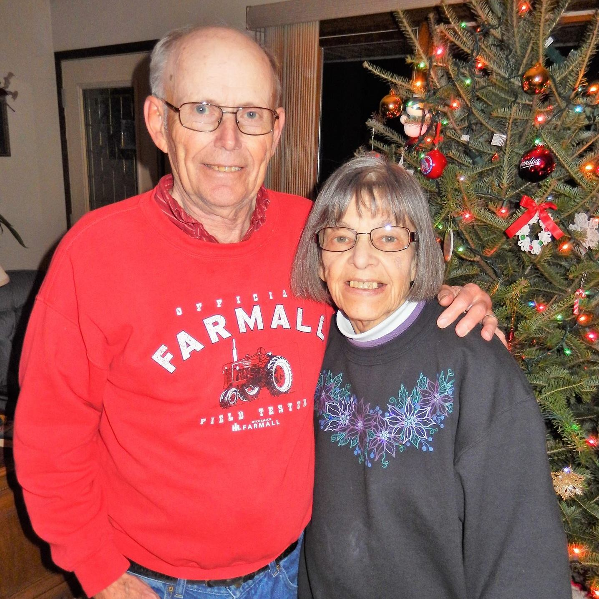

In Memory of Randy & Rodney Andresen

Randy Andresen
Chadwick High School
Class of 1979

The Andresen Family
1973

Rodney Andresen
Chadwick High School
Class of 1980
Every year since 1985, the Andresen Family of rural Chadwick has awarded scholarships to graduating seniors. These scholarships were created in honor of Randy and Rodney Andresen. Even though they were afflicted with muscular dystrophy, they still attended school and graduated with honors in 1979 and 1980. They worked hard, rarely complained, and were truly an inspiration to their family, friends, and classmates.
In 2012, the family decided to rename the scholarships the Andresen Memorial Scholarship, still in honor of Randy and Rodney. The Andresen family continues to give back to the community, supporting young people in Carroll County as they pursue their educational dreams.
Remembering Harold & Kay Andresen

Harold and Kay Andresen of rural Chadwick, Illinois farmed for over 50 years. Together they raised their family and built a legacy of hard work, generosity, and community spirit. Kay passed away in 2017, and Harold joined her in 2025.
In memory of Harold, Kay, and their sons Randy and Rodney, the Andresen family continues to award scholarships each year to deserving young people in Carroll County, carrying forward their legacy of giving back to the community.
Available Scholarships
-
Andresen Ag Scholarship
For students pursuing studies in agriculture and related fields. This scholarship encourages young people to join the vital field of agriculture.
Award: $1,500
-
Andresen Memorial Scholarship
For students pursuing any field of study. This scholarship honors Randy and Rodney's legacy and supports students in their educational journey.
Award: $1,500